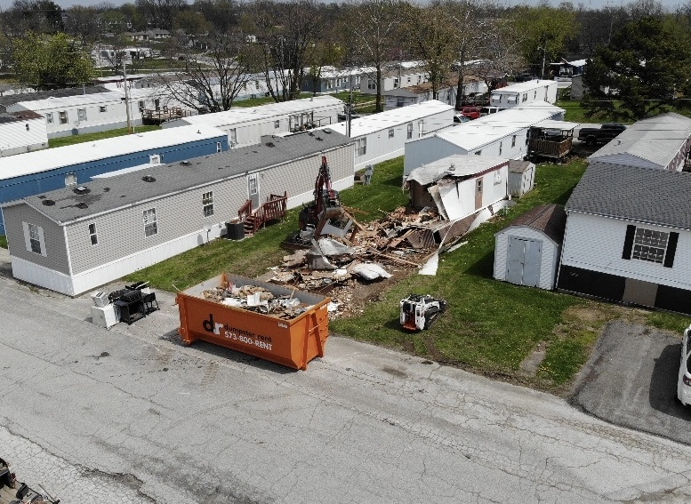

After a demolition project wraps up in Columbia, MO, property owners are often surprised by the sheer volume of material left behind. A single residential house demolition can generate 50 to 200 tons of debris — concrete, lumber, metal, roofing, and more. So where does it all go?
The short answer: it depends on the material. Some of it gets recycled, some goes to a permitted landfill, and hazardous materials require special handling. According to EPA estimates, about 600 million tons of construction and demolition debris are generated nationally each year — more than twice the amount of regular household trash. Around 76% of that is recovered or recycled.
As a demolition contractor serving Mid-Missouri, we manage debris disposal on every job. Here's a detailed look at how the process works in our area.
In This Guide:
Types of Demolition Debris
Demolition debris — officially called construction and demolition waste, or C&D waste — includes everything that comes out of a structure when it's torn down. The Missouri Department of Natural Resources (DNR) defines it as concrete, asphalt, wood, roofing, drywall, metals, and miscellaneous materials generated by demolition of residential and commercial buildings.
Here's what we typically see on demolition projects throughout Columbia and Boone County:
| Material | Common Sources | Where It Goes |
|---|---|---|
| Concrete & masonry | Foundations, driveways, block walls | Crushed into recycled aggregate |
| Wood & lumber | Framing, decking, plywood, trim | Chipped for mulch or C&D landfill |
| Scrap metal | Steel beams, rebar, copper pipe, wiring | Scrap yard recycling |
| Roofing materials | Asphalt shingles, underlayment, flashing | Shingle recycling or landfill |
| Drywall | Interior walls and ceilings | Gypsum recycling or C&D landfill |
| Brick | Exterior walls, chimneys, pavers | Salvaged, crushed, or landfill |
| Mixed waste | Insulation, carpet, siding, fixtures | C&D landfill |
On a typical house demolition in Columbia, concrete and wood make up the bulk of debris by weight. Metal is a smaller portion by volume but has the highest recycling value per ton.
How Demolition Debris Is Sorted in Mid-Missouri
Responsible demolition isn't just about tearing a structure down — it's about managing what comes out efficiently. The way debris gets sorted depends on the project size, site conditions, and timeline.
On-Site Separation
On many jobs in Columbia and the surrounding area, we separate materials right at the demolition site. Concrete goes into one pile, metals into another, clean wood into a third. This is the most cost-effective approach when space allows, because separated materials have lower disposal fees than mixed loads sent to a landfill.
Selective Demolition
When the goal is to maximize salvage and recycling, we perform selective demolition — carefully removing valuable or reusable materials before the main structure comes down. This might mean stripping copper wiring, pulling reusable fixtures, or recovering hardwood flooring. Organizations like Habitat for Humanity ReStores sometimes accept doors, cabinets, plumbing fixtures, and dimensional lumber from demolition projects.
Transfer Station Processing
When on-site sorting isn't practical — tight lots, fast timelines, or heavily mixed materials — debris is hauled to a transfer station or materials recovery facility. In Boone County, Boone County Resource Recovery accepts construction debris for sorting and processing. Materials are separated mechanically and by hand, with recyclables pulled out before the remainder goes to a permitted landfill.
Why sorting matters for your budget: In Missouri, mixed C&D waste sent to a landfill costs significantly more per ton in tipping fees than pre-sorted, recyclable materials. Proper on-site sorting on a demolition job can reduce disposal costs by 20-40% — savings that factor into your project estimate.
What Gets Recycled After Demolition
A well-managed demolition can divert a large percentage of debris away from landfills. Nationally, concrete and asphalt have recycling rates above 95%, and steel recycling in construction sits around 98%. Here's what happens to the most common recyclable materials from demolition projects in Mid-Missouri.
Concrete and Asphalt
This is the easiest and most commonly recycled demolition material. Concrete from foundations, driveways, patios, and slabs is run through a crusher to produce recycled aggregate. That aggregate gets reused as road base, gravel for construction pads, pipe bedding, and general fill material. Under Missouri DNR rules, uncontaminated concrete qualifies as clean fill — meaning it can be reused on other properties without a landfill permit.
Scrap Metal
Steel, iron, copper, and aluminum are some of the most valuable materials that come out of a demolition. Structural steel beams, rebar cut from concrete, copper plumbing and electrical wiring, HVAC ductwork, and metal roofing all go to local scrap yards for processing. On larger commercial demolitions, the scrap metal value can offset a meaningful portion of the overall project cost.
Clean Wood
Untreated, unpainted wood from framing and structural lumber can be chipped into landscape mulch, used as biomass fuel, or processed into engineered wood products. The key word is "clean" — treated or painted wood typically can't be recycled due to chemical contamination and goes to a C&D landfill instead.
Asphalt Shingles
Old roofing shingles can be ground up and mixed into new asphalt paving material. This recycling option is becoming more widely available across Missouri, though facility availability varies by region.
Brick and Masonry
Whole bricks in good condition can sometimes be salvaged and resold — reclaimed brick is in demand for both residential and commercial projects. Otherwise, brick and masonry get crushed and used as aggregate or fill, similar to recycled concrete.
Questions About Debris on Your Project?
We'll walk you through exactly what happens to the debris on your specific job. Every demolition project is different, and we explain the full disposal plan during your free estimate.
What Goes to the Landfill
Not everything from a demolition can be recycled. Materials that typically end up at a permitted C&D landfill include:
- Treated or painted wood — Chemical treatments like CCA (chromated copper arsenate) prevent recycling
- Mixed or contaminated materials — Debris that can't be cost-effectively separated
- Carpet and vinyl flooring — Most carpet and sheet vinyl isn't recyclable
- Fiberglass insulation — Difficult to recycle and often contaminated with dust and debris
- Composite siding and trim — Mixed-material products that can't be separated
- Contaminated drywall — Drywall with heavy paint layers or water damage
In Missouri, C&D landfills are permitted and regulated separately from municipal solid waste landfills. They're designed specifically for construction and demolition debris, with requirements for groundwater monitoring, daily cover, and operational plans under Missouri DNR oversight. The City of Columbia operates a landfill on Peabody Road that accepts C&D waste from the area.
Important: Missouri DNR specifies that demolition debris should not be chipped, shredded, milled, ground, or otherwise processed in ways that increase leachability before landfill disposal. This rule prevents contaminants in treated materials from leaching into groundwater after disposal.
Hazardous Materials in Demolition
Some demolition debris requires special handling and cannot go into standard C&D landfills or recycling streams. In the Columbia area, hazardous materials are most commonly found in structures built before the 1980s.
Asbestos
Found in insulation, floor tiles, siding, pipe wrap, and roofing materials in buildings constructed before 1980. Missouri DNR requires a certified asbestos inspection before demolition of regulated structures. If the inspection finds 160 square feet, 260 linear feet, or 35 cubic feet or more of asbestos-containing material, all of it must be removed by a Missouri-registered abatement contractor before demolition begins. The state also requires 10 working days' notice to DNR before abatement work starts.
Lead Paint
Common in homes built before 1978. Lead paint debris from demolition is regulated under both Missouri and federal guidelines. While pre-removal isn't always required before demolition, disposal must follow specific protocols, and scrap metal coated with lead-based paint may require testing before a landfill will accept it.
Other Regulated Materials
Mercury from old thermostats and fluorescent lighting, PCBs from older electrical equipment, and chemical residues from commercial or industrial buildings all require separate handling. These materials go to hazardous waste facilities — not standard C&D landfills.
Before any demolition in Columbia or Boone County: We assess the structure for potential hazardous materials. Note that Boone County does not require a demolition permit, but you should check with the Boone County Health Department regarding asbestos and the Boone County Fire Protection District if a controlled burn is involved. For demolitions within Columbia city limits, see our complete guide to demolition permits in Columbia.
Missouri Regulations for Demolition Debris Disposal
Demolition debris disposal in Missouri is regulated by the Missouri Department of Natural Resources under the state's Solid Waste Management Law (Chapter 260, RSMo). Here's what property owners in Mid-Missouri should know.
Permitted Disposal Required
All C&D waste in Missouri must be taken to a permitted landfill or transfer station for disposal — regardless of whether it came from a residential or commercial structure. Dumping demolition debris in unpermitted locations or on private property (other than qualifying clean fill) is illegal. For businesses, illegal disposal of construction and demolition waste is a Class D felony punishable by fines up to $20,000.
Clean Fill Exemptions
Missouri provides an important exception for "clean fill" — defined as uncontaminated soil, rock, sand, gravel, concrete, asphaltic concrete, cinder blocks, brick, and minimal amounts of wood and metal. Clean fill can be placed on private property or used in construction projects without a landfill permit, provided it meets DNR standards. The City of Columbia has a separate clean fill permit process for projects within city limits.
Contractor Responsibilities
Licensed demolition contractors in Missouri are responsible for ensuring all debris is transported to and disposed of at permitted facilities. At Atlas Excavation & Demolition, we maintain relationships with permitted disposal and recycling facilities throughout the Mid-Missouri region and handle all hauling and disposal logistics as part of your project.
Planning a Demolition Project?
Atlas Excavation & Demolition handles everything from the initial tear-down to final debris disposal and site preparation. We serve Columbia, Ashland, Fulton, Boonville, Centralia, and all of Mid-Missouri.
(573) 530-3872 Request Estimate OnlineFrequently Asked Questions
Where does demolition debris go in Columbia, MO?
Debris is sorted and sent to the appropriate facilities. Recyclable materials like concrete, metal, and clean wood go to recycling processors. Remaining waste goes to a permitted C&D landfill such as the City of Columbia Landfill. Hazardous materials like asbestos go to specially permitted disposal facilities.
Can demolition debris be recycled?
Yes — a significant portion of it can. Concrete and asphalt recycling rates exceed 95% nationally. Metals go to scrap recyclers, and clean wood can be chipped for mulch or biomass. On a well-managed demolition project, the majority of debris by weight can be diverted from landfills.
Is the homeowner responsible for debris disposal?
When you hire a professional demolition contractor, debris removal and disposal are included in the project scope. We handle all loading, hauling, and proper disposal at licensed facilities so you don't need to arrange anything separately.
How much does demolition debris removal cost?
Debris removal is typically built into the overall demolition project cost. For standalone debris hauling in Mid-Missouri, expect $300-$800+ per truckload depending on material type and volume. Call us at (573) 530-3872 for a free estimate on your specific project.
What about hazardous materials like asbestos?
Missouri DNR requires a certified asbestos inspection before demolition of regulated structures. If asbestos-containing material exceeds state thresholds (160 sq ft, 260 linear ft, or 35 cubic ft), it must be professionally abated before demolition begins. We coordinate hazardous material assessments and abatement as part of our planning process.
Is it legal to dump demolition debris on my own property?
Generally, no. All C&D waste must go to a permitted facility. The exception is clean fill — uncontaminated concrete, rock, brick, and soil — which can be used for fill on private property under Missouri DNR guidelines. Illegal disposal by businesses is a Class D felony with fines up to $20,000.
Get a Free Demolition Estimate
Whether you're tearing down a house, removing a garage, or clearing a commercial structure in Mid-Missouri, Atlas Excavation & Demolition handles the full process — including responsible debris disposal at every step. We serve Columbia, Ashland, Fulton, Boonville, Centralia, and communities throughout Boone, Callaway, Cole, Howard, and Cooper counties.
Contact us today for a free, no-obligation estimate:
- Phone: (573) 530-3872
- Email: hello@deployatlas.com
- Online: Request a Free Estimate
Planning your demolition budget? See our guides to house demolition costs, garage demolition costs, and mobile home removal costs in Mid-Missouri.